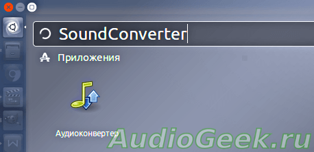
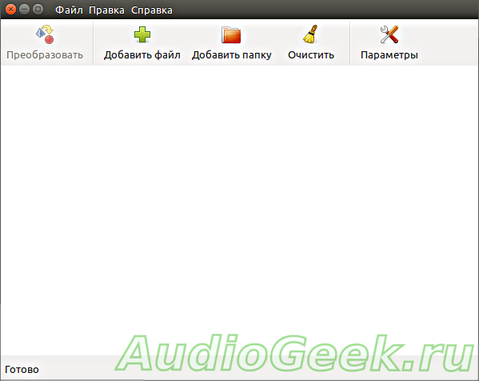
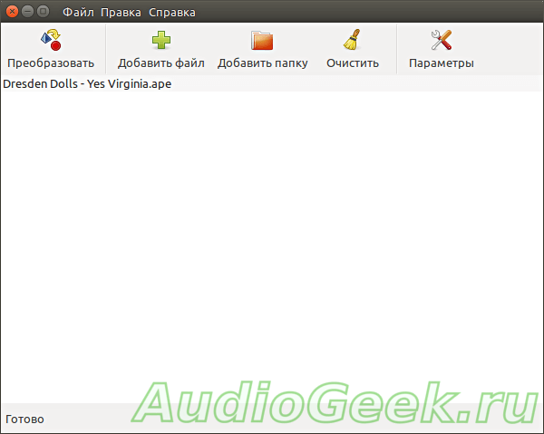
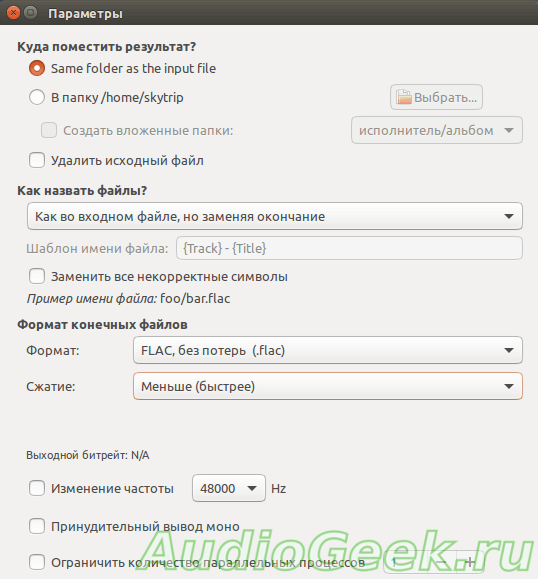
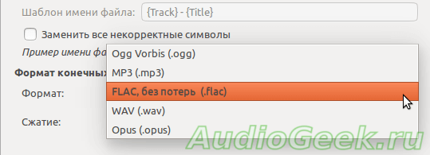
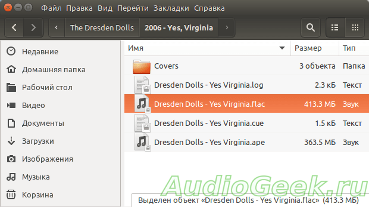

Аудио конвертер в mp3 и любой другой формат под Linux
22/07/2018СофтНебесный Андрей
Каждый меломан в своей жизни регулярно сталкивается с необходимостью конвертировать свои запасы музыки из одних форматов в другие. Вот и мне потребовалось найти конвертер APE во FLAC для Linux. Возиться в консоли мне лень, поэтому отыскал вариант для ленивого тыканья мышкой.
Программа SoundConverter
Перерыв несколько страниц поиска я все же нашел то что искал. Программа называется SoundConverter. Неожиданно. Правда консоль все-таки нам пригодится, но всего один раз, чтоб установить саму прогу. Набираем в консоли:
$ sudo apt-get update
$ sudo apt install soundconverter
Ну и вот вам на всякий случай ссылка на официальный сайт разработчиков программы. Если же вы сторонник работы в консоли, то вам прямая дорога на официальную документацию.
А мы тем временем вводим команду для установки, пароль, ждем пока терминал пошерстит и установит программу. К слову, аудиоковертер для linux весит около 100кБ.

Главное окно
Окно программы просто и понятно до безобразия. Я даже сначала не знал, стоит ли так все расписывать, но на всякий случай выдал эту статейку. Кстати я ставил аудиоконвертер на Ubuntu 16.04 — никаких дополнительных танцев с бубном не понадобилось.

Чтобы вставить то, что требуется сконвертировать, достаточно легким движением мыши перетащить нужный аудио файл в окно. В моем случае это альбом группы Dresden Dolls в формате ape. При желании можно перетащить всю папку с музыкой. В ней даже могут быть вложенные папки с множеством файлов. Аудиоконвертер сам найдет все, что он может отконвертировать.

Настройка формата выходного файла
Все что от нас требуется это заглянуть в параметры конвертера, открываемые кнопочкой с инструментами. К слову конвертер кушает кучу форматов, среди которых есть как звуковые, так и видео-форматы: wav, mp3, flac, alac, aac, ogg, avi, mpeg, mov, m4a, ac3, dts, mpc и другие. Но на выходе могут быть только аудио файлы.

Из моих настроек видно, что после преобразования конвертер положит файл в ту же папку, где лежит исходник, без удаления последнего. В качестве выходного формата мной был задан FLAC, который мой плеер, в отличие от APE, кушает без проблем. Я не сторонник сжатия, поэтому выбрал ‘Меньше’.
При необходимости можно также изменить частоту дискретизации. Это может быть актуально, если вы переводите Hi-Res записи с частотой дискретизации 192кГц для прослушивания на смартфоне. Рекомендую прочесть статью — Частота дискретизации и теорема котельникова, в которой просто и понятно объясняется что это за частота, за что она отвечает и почему цифровой звук не так хорош каким кажется…
Помимо Flac, в качестве формата выходного файла можно выбрать ogg, mp3, wav и opus. По умолчанию установлен ogg.

Для каждого формата настройки отвечающие за качество будут свои. Например для формата mp3 необходимо указать тип битрейта и качество.
Выбираем, что желаем, и жмем кнопку Преобразовать, это та на которой из пирамидки становится шарик. В нижней части окна программы появится полоска хода выполнения процесса конвертации и расчетное время до конца. Когда полоска закончится и загорится неприметная серая надпись ‘Готово’ Можно радостно бежать в указанную папку и шарить там готовый FLAC файл, ну или какой он там у вас.

Для тех кто предпочитает слушать музыку треками, а не альбомами, можно нарезать его на отдельные треки используя cue-файл. Как это сделать под линуксом читаем в статье: